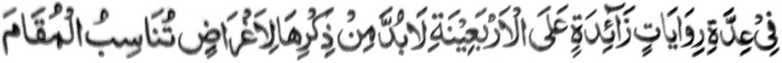
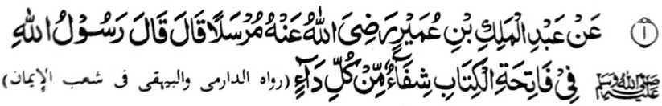
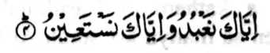

Aden a saba-ad a manga Hadith a liyo-liyowan sangkanan a pat polo a Hadith a miya-ona ma-aloy, a patot den so ka-aloy ran, sabap ko kadada-it iyan sangka-iya a darepa.
Si-i sangka-iya a ba-adan, na phanotholen si-i so masasalebo a kalbihan o saba-ad a manga Sowar (jama’ o Surah). Giyangka-iya a manga Sowar na manga bababa, ogaid na manonobra so kalbihan ago manga balas iran. Ped ro-o, na aden a isa odi na dowa a mala-i gona, a patot a mipaka-inengka ko manga tao a mbatiya sa Qur’an.

Miyakathitayan ko Abd-il Malik ibn-e Umair (Radhiallaho ‘Anho) a pitharo iyan a pitharo o Rasulollah (Sallallaho ‘Alaihi wa Sallam), “Madadalem ko Surah Al-Fatihah so bolong ko langowan o sakit.”
So manga kalbihan o Surah Al-Fatihah na miyato-on ko madakel a Hadith. Miya-aloy ko isa a Hadith, “Aden a Sahabi a gi-i zambayang sa Sunnat. Tiyalowan sekaniyan o Rasulollah (Sallallaho ‘Alaihi wa Sallam), ogaid na sabap sa gi-i niyan kazambayang na da makasembag. Oriyan o kiyapakapasad iyan na somiyong sekaniyan ko Rasulollah (Sallallaho ‘Alaihi wa Sallam), na iniza-an sekaniyan o Rasulollah (Sallallaho ‘Alaihi wa Sallam) o ino to da makasembag ko oriyan o kiyatalowi niyan non. Pitharo iyan a da sekaniyan makasembag sabap ko gi-i niyan kazambayang. Ini-iza-on o Rasulollah (Sallallaho ‘Alaihi wa Sallam) o ba niyan da mabatiya so Ayat sa Qur’an:
‘Hay so Miyamaratiyaya! Tarima-a niyo so Allah go so Sogo (Iyan) igira a tiyawag kano Niyan...’ (Surah Al-Anfal: 24)
Oriyan niyan na pitharo on o Rasulollah (Sallallaho ‘Alaihi wa Sallam), “Petharo-on ko reka a Surah a aya piyamoro-poro-an ago aya miyakalala-i balas ko Qur’an. Giyoto so Surah Al-Hamd (so paganay a Surah sa Qur’an) a pito a Ayaat iyan. Giya-i so (bebethowan sa) Sab’al Mathani ago aya makasasaliyo ko Qur’an a Maporo.”
Pitharo o saba-ad ko manga Auliya a so langon a madadalem ko miyanga o-ona a manga kitab na miyadiyamong sangkanan a Qur’an,
Inosay ran a so Ba na batang a pekha-isa isa niyan so madakel a aya mitotoro iyan so kapaka-isa-isa. Mata-an a aya polimposan o antap na so kapaka-isa-isa o oripen ago so Allah. So manga Auliya na inisompat iran non pen a so madadalem ko Ba na miyadiyamong sangkanan a titik iyan, a mitotoro iyan so kaisa-isa o Allah - a nganin a lagid o titik a diden kaba-ad.
So manga Ulama na miyapanothol iran a giyangkoto a Ayat a:

“Seka bo-i pezoa-soaten nami go Seka bo-i phangeniyan nami sa tabang...” (Surah Al-Fatihah: 5)
na pangeni anan a kitoman o langon o antap tano, melagid o sa donya antawa-a si-i ko Akhirat. So pen so isa a Hadith, na miya-aloy a so Rasulollah (Sallallaho ‘Alaihi wa Sallam) na pitharo iyan, “Ibet si-i Rekaniyan a Makatatangan ko kawiyag-oyag aken, ka so Surah a lagida-i na daden mitoron si-i ko Taurat ago si-i ko Injeel go si-i ko Zabur, go si-i ko ped a darepa ko Qur’an.”
So manga ‘Mashaikh’ na miya-aloy ran a so kabatiya-a ko Surah Al-Fatihah sa titho a paratiyaya ago sarig na phakabolong ko langowan a sakit, melagid o sakit o niyawa odi na so badan, marayag sa masolen. So kapagadimata ko kisosorat iyan ago so kapendila-i ron na phakabolong ko sakit.
Miya-aloy ko Sihah (Nem a kasasarigan a sosoratan ko manga Hadith) a so manga Sahabah na lalayon niran pembatiya-an so Surah Al-Fatihah ago iphagiyop iran ko manga tao a inebot a nipay o di na orang, ago apiya si-i ko penggedam sa kabereg, ago si-i ko maliliwat. So Rasulollah (Sallallaho ‘Alaihi wa Sallam) na ini-iyog iyan angka-i. Aden pen a salakao a ‘riwayat’ a aya mitotoro iyan na so Rasulollah (Sallallaho ‘Alaihi wa Sallam) na biyatiya iyan angka-iya Surah na ini-iyop iyan ko Sa’ib ibn-e-Yazid ago ini-ibong iyan so doda iyan ko pezakit [ko Sa’ib].
Pitharo pen ko isa a Hadith, a opama ka si-i ko kathoroga ko tao, na batiya-an o tao so Surah Al-Fatihah go so Surah Ikhlas go i-iyop iyan ko ginawa niyan na phakalidas sekaniyan ko langon o marata inonta bo so kapatay.
Miya-aloy pen ko isa a riwayat, a so Surah Al-Fatihah na aya timbang iyan na so balas o dowa ko telo bagi ko Qur’an. Miyapanothol a so Rasulollah (Sallallaho ‘Alaihi wa Sallam) na miyatharo iyan, “Bigan ako sa pat a nganin a ped ko matitindos a kakaya-an ko ‘Arsh, a daden pen a bigan non ko miyanga-oona. Giyoto
So Hadrat Hassan Basri (Rahmatullahi ‘Alaihi) na piyanothol iyan a katharo o Rasulollah (Sallallaho ‘Alaihi wa Sallam) a saden sa matiya ko Surah Al-Fatihah na lagid o tao a miyabatiya iyan so Taurat, go so Injeel, go so Zabur ago so Qur’an.
Miyapanothol ko isa a Hadith a so Shaitan na tanto a miyakamboko, ago miyakagora-ok go tiyaboyagan niyan sa bayanek so olo niyan ko pat a miyanggola-ola:
Miyapanothol pho-on ko Sha’bi (Rahmatullahi ‘Alaihi) a miyaka-isa na aden a mama a somiyongon na miyaphanon niyan non so kapezakit a kilid iyan. So Sha’bi (Rahmatullahi ‘Alaihi) na inipando iyan non so kabatiya-a niyan ko Assasul Qur’an (Onayan o Qur’an) ago iyopen niyan ko pezakiton. Kagiya i-iza iyan o antona-ai ma-ana o Assasul Qur’an. Pitharo o Sha’bi (Rahmatullahi ‘Alaihi), “So Surah Al-Fatihah.”
Minisorat a paparangayan o manga Mashaikh a so Surah Al-Fatihah na ron madadalem so Isme-A’zam, ma-ana so piphaporo-an a ingaran o Allah, go paliyogat so kabatiya-aon sabap ko kakowa o langon o singanin. Dowa a okit a kabatiya-aon:
Giyangka-iya Surah na ipezorat, a aya dawat a phagosaren na inokopan a ig [initinda a tatago-an sa mamot a obar-obar], o di na kastori o di na saffron, sa pinggan, na so sorat na phagonaben non na pephaki-inom ko pekhasakit ko soled o pat polo gawi-i. Tantowa-i a bolong ko manga ala a paniyakit. So kabatiya-a on sa maka pito oriyan niyan na iphagiyop ko pekhasakit na tatarima-an pen a bolong sa sakit a ngipen, sakit a olo ago sakit a tiyan.
Langona-i na miya-aloy ko kitab a ‘Mazahir-e-Haq’.
So Muslim Sharif na katatago-an sa Hadith a so Ibn-e-Abbas (Radhiallaho ‘Anhoma) na piyanothol iyan a miyaka-isa na so Rasulollah (Sallallaho ‘Alaihi wa Sallam) na mo-ontod a peda mi na pitharo iyan, “Si-i ko langit na aden a kiyalekan-an non a pinto a daden kaleka-i ko miyanga-oona, na miyakapo-on non a Mala-ikat a daden makatoron ko miyanga-oona. Giyangkoto a Mala-ikat na pitharo iyan raken, ‘Tarima-a ngka a dowa a mapiya tothol a dowa a sindao a daden a bigan non ko miyanga-oona sa isa bo. Isa on so Surah Al-Fatihah ago ika dowa so kaposan a ba-ad ko Surah Al-Baqarah’.” [ma-ana so mori a ‘Ruku’].
Giyangka-iya dowa a sowar na bithowan sa sindao sabap sa si-i ko Gawi-i a Kaphangokom, na melalakao angka-iya dowa ko ona-an o pembatiya kiran [ka an niran kasindawi so iphagokit iyan.]